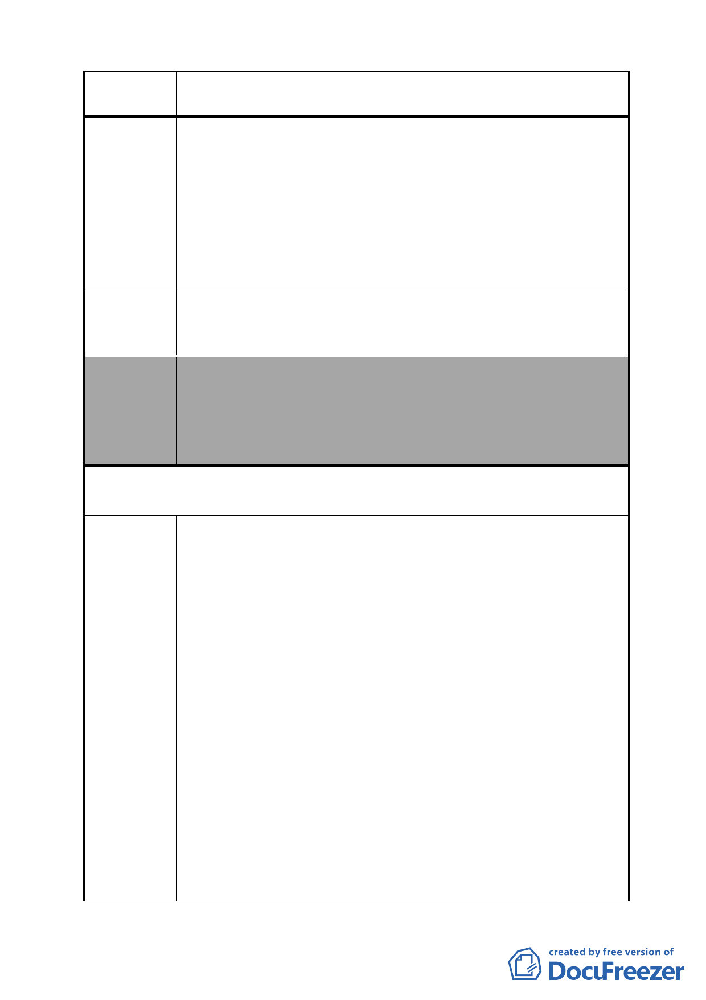

案 名 變更臺北市南港區鐵路地下化沿線土地主要計畫案
建議辦法
委員會
決議
要求將原有變電所用地北移，足見台電心中對於變電所用地
早有定見，將與居民溝通的共識棄於不顧。
3.事實上，台電不論於目前擇定之新舊址興建變電所，都將遭
遇居民強力的抗爭，但仍不願意積極規劃其他用地，卻每每
用「再不興建，則於○○年將會限電」為由要脅居民及市府
官員。事實上，都市發展的過程，變電所雖然有其必要，但
市民意識亦伴都市發展隨成長，台電選擇變電所用地必定更
加困難，台電不應該再用既定的思維考量變電所擇址問題。
故請 貴委員會考量否決台電將變電所北移之申請，並要求
台電重新規劃用址務必遠離目前即將全面發展之忠孝東路及
南港路沿線。
本案除文字誤繕應再作修正外，其餘依市府本次會議所送修
正計畫書內容通過。
（依市府本次會議所送修正計畫書，本案將變電所用地自本
次計畫範圍剔除，俟台電公司另尋適當替代的設置地點，另
案辦理都市計畫變更）
第三次意見（第 10 屆第 5 次定期大會書面質詢所提建議）
陳情理由
玉成變電所原訂於台電中興倉庫南側的規劃，經過居民抗
爭而暫停後，目前又死灰復燃，將變電所位址遷移到原基地北
側，仍然臨近住家，再度引起居民不滿，本席要求都市計劃委
員會，註銷台電現有變電所預定地，強迫台電重新思考，務必
將變電所遠離住宅商業區。
本席表示，台電公司原訂於該公司中興倉庫用地南側設
置，經居民多次抗爭及多次協調台電公司，原擬同意將變電所
置現台鐵調車場回饋之公園用地，並於去年底召開說明會，亦
遭遇強大反對聲浪。台電於此時提出於中心倉庫原址北移變更
為變電所用地，非但心態可議，恐遇更多居民抗爭及阻力，非
但無助於台電公司尋覓變電所用址，更加深居民對於台電公司
的疑慮。
本席認為，台電不論於目前擇定之新舊址興建變電所，都
將遭遇居民強力的抗爭，但仍不願意積極規劃其他用地，卻每
每用「再不興建，則於○○年將會限電」為由要脅居民及市府
官員。本席也具體要求都委會註銷已經核定位於中興倉庫南側
的變電所用地，並解否決正在審議的變更案，讓玉成變電所用
址案，重新開始，逼迫台電重新思考，而不是掐著市府的脖子
- 55 -